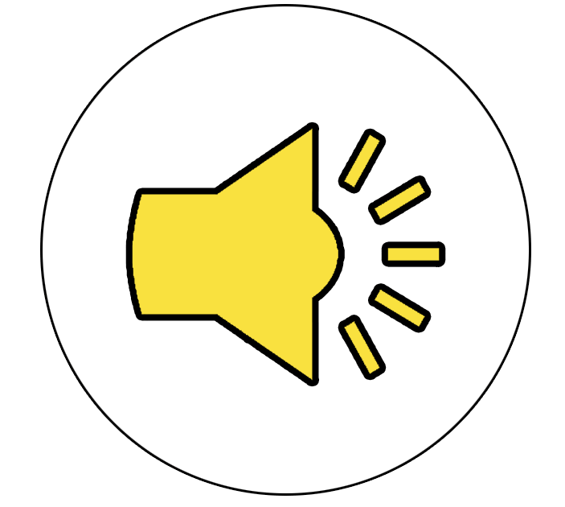
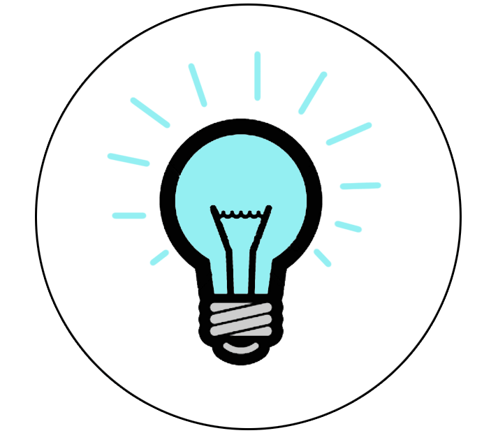
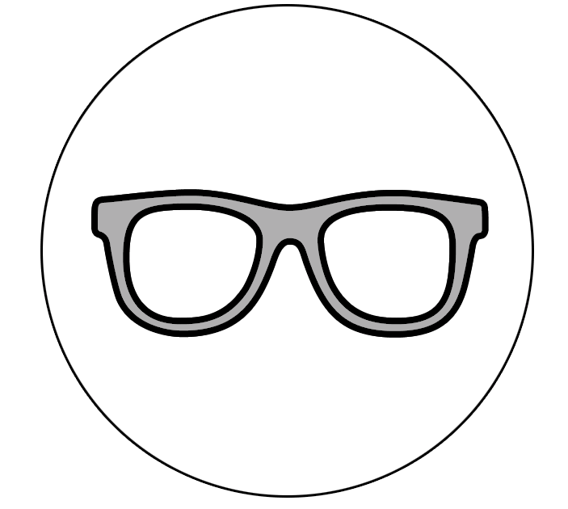

IELTS Speaking
In this section you will find all information you need about IELTS Speaking test. You will also see full IELTS Speaking sample with explanations, find useful links for IELTS Speaking practice, advanced vocabulary and IELTS Speaking tips.
|  |
 |
 |  |
| Speaking samples | Speaking exercises | Tips and tricks | Vocabulary |
IELTS Speaking test is the fourth section of IELTS test. It is the same for Academic and General IELTS.
| Time | 10-15 minutes |
| Sections | 3 |
IELTS speaking test is a face-to-face interview between the test taker and the examiner, which lasts from 10 to 15 minutes and has 3 sections.
- Section 1: introduction and interview (4–5 minutes). First of all, the examiner will ask you to tell your name and show your passport. After you introduce yourself to the examiner, you will be asked some questions on general topics, such as work, studies, home, family, interests etc.
- Section 2: long turn (3–4 minutes). You will be given a task card about a particular topic. You will have 1 minute to prepare a monologue on the given topic. Then you return the task card to the examiner and talk about the topic for 2 minutes. After your talk the examiner may ask you a few questions.
- Section 3: discussions (4–5 minutes). The third section involves a discussion between the examiner and the test taker, generally on questions relating to the theme which they have already spoken about in Section 2.
See how IELTS Speaking test is scored: IELTS Speaking marking scheme.
IELTS Speaking test sample
Here you can see a full IELTS Speaking test sample. The examiner's questions are written for each part.
IELTS Speaking: Part 1
Time: 4-5 minutes
Good morning. My name is John Smith. Could you tell me your full name please?
Can I see your identification please? Thank you!
In this first part, I’m going to ask you some questions about yourself. Let’s talk about your family. Do you have a big family?
- How much time do you spend with your family?
- What do you like to do together as a family?
- Are people in your country generally close to their families?
Let’s move on to talk about technology. Do you use any gadgets on a daily basis?
- How often do you use Internet?
- What is your favourite technological device?
IELTS Speaking: Part 2
Time: 3-4 minutes
Okay. Now we move on to Part two of the speaking test. Have a look at this card and read it carefully. You have about one minute to think about your answer. Then approximately one to two minutes to talk to me about what's on the slip. You can use a pen and paper to make some notes.
Don't worry if I stop you, I'll let you know when the time is up.
- Who is he/she
- When did you meet
- Why is he/she so close to you
- Do you have a lot of friends?
IELTS Speaking: Part 3
Time: 4-5 minutes
- What do you think is the best time to get new friends?
- Do you think friendship is important nowadays?
- Is it important to stay in touch with your friends throughout the years?
- What personal qualities are the most important to be a good friend?
--Thank you! Your speaking test is over now. You can enjoy the rest of your weekend!
How to prepare for IELTS Speaking?
The above written sample is one possible option of how IELTS Speaking test can pass. You may encounter different types of questions on IELTS Speaking, for example your topics may include work, studies, accommodation, food, weather, health, hobbies, relationships and so on.
The best way to prepare for IELTS Speaking test is to
- read a lot of speaking questions and try answering them
- learn a lot of advanced speaking vocabulary
- practise answering IELTS Speaking questions, using vocabulary that you've learnt
- read more IELTS Speaking samples with answers, adopt new phrases and vocabulary in your speech
Useful IELTS Speaking preparation materials:
The materials above contain all what you need to succeed in IELTS Speaking. Good luck!